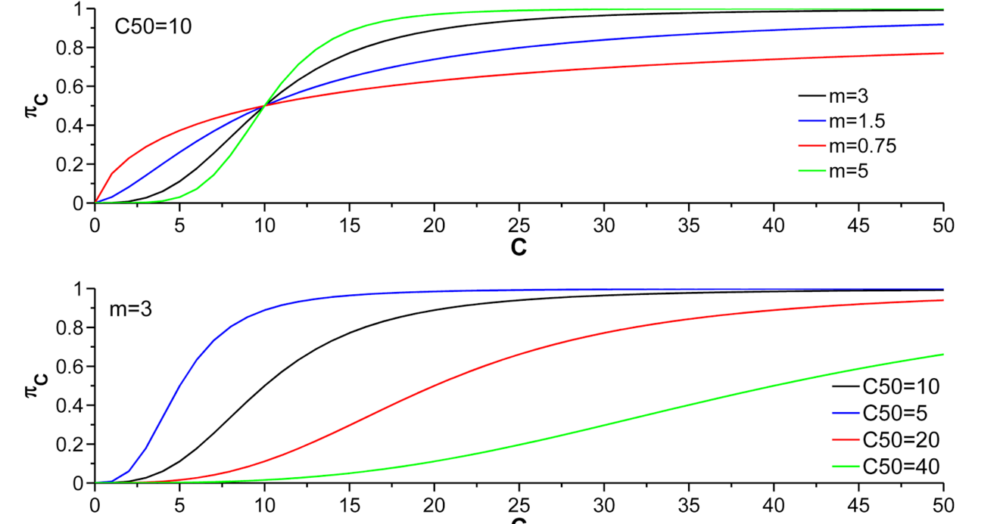

Ebola
Table of Contents
1 Introduction
To inform the requirements for stockpiling, we evaluate the relationship between timeliness of vaccination implementation and number of doses necessary to extinguish an outbreak
2 Assumptions
2.1 Network Construction
Population
- 30 communities
- Avg. no. of households/community: 125 (Plange-Rhule et al. 2012)
- Avg. household size: 6 (Ferraro et al. 2014)
Generating Network
- For each community, randomly sample the number of households in the community from a Poisson distribution.
- For each household, randomly sample the number of people in household from a Poisson distribution. Therefore, we produce a random network with an average of N individuals.
Mixing
- Assumed homogeneous mixing in each household.
Everyone in the household is connected to each other. - For degree distribution outside the household, we use
- the degree distribution from empirical data from the Ministry of Health in Liberia or
- a discrete exponential degree distribution (May be supplementary analysis).
- We randomly assign contacts for each individual from the
population. A contact outside the household can either be
- in the individual's community (prob. pC = 0.76 is median probability of the frequency of contacts within each zone from the empirical contact tracing data from MoH, Liberia)
- or outsize the individual's community (1-pC)
- Clustering Coefficient
The clustering coefficient (ϕ) is calculated as \begin{equation} \varphi = \frac{\text{no. of triangles}}{\text{no. of triples}} = \frac{\text{trace}(G^3)}{||G^2||-\text{trace}(G^2)} \end{equation}Note: I did not understand fully how clustering coefficient was calculated. Understand from Chad.*
2.2 Epidemiology
We used an SEIR type model to simulate the spread of Ebola. The entire population was assumed to be susceptible to infection as there is no or limited information regarding fraction of population immune prior to an outbreak. In addition, the initial assumption regarding the spatial allocation of the immune individuals can influence the disease spread. We run simulations on a daily scale till there are no latently infected or infectious individuals remaining.
| Par. | Definition | Value/Distribution | Reference | Comment |
| qH | Prob. of infection of household contacts from an infected individual/day | 1-(1-0.2)1/8 | Merler et al. 2015 | The secondary attack rate within the household ~ 20% (7-35%) and avg. duration of infectiousness is 8 days |
| qC | Prob. of infection of community contacts from an infected individual/day | 1-(1-0.05)1/8 | Bull of World Health Ogran. 1978 | The secondary attack rate within the household ~ 5% and avg. duration of infectiousness is 8 days |
| σi | Duration of latent stage of infection | ~NB(4.285,0.693) | WHO Ebola reponse team. 2014 | Parameters obtained by fitting gamma dist. of the incubation period from the 2014 Ebola outbreak. Neg. bin. was chosen as it is discrete analogue of the gamma dist. |
| δi | Duration of infectious period | ~NB(10,0.015)+5 | Yamin et. al. 2015 | Parameters obtained by fitting to triangular dist. with mode of 8 days and range from 5-14 days. Neg. bin. was chosen to assign a non-zero prob. to the min. value of the range. |
2.3 Contact tracing and isolation
- εC is defined as the probability of finding a single contact per day.
- We assume that the daily contact tracing efficacy is 95%.
- Initiation of contact tracing begins on a given day with
probability:
\begin{equation}
\pi_C = 1 - \frac{1}{1+(\frac{C}{C_{50}})^m},
\end{equation}
where C is the cumulative number of confirmed cases (case heads to hospital and confirmed through laboratory testing) on day t, C50 is the number of confirmed cases required such that there is 50% chance that the intervention will start, and m is a shape parameter for the sigmoidal function.
- We assumed that the intervention will start, if it has not already, once there have been more than 50 confirmed cases.
- No data to suggest appropriate values of C50 and m. We are
using C50 = 10 and m = 3.

- We assume that once a case is "isolated" there is
- 100% reduction in community transmissibility.
- X% reduction in household transmissibility.
NOTE: We are implicitly trying to incorporate the effects of an intensive care unit (ICU), which is not 100% effective in reducing transmission among close contacts.
- We did not include ICU explicitly for simplicity.
- The probability that an infectious individual goes to hospital
during their infectious period is given by
1-[(1-pH)-q(1-pH)εC]δ
where pH is daily probability of self-reporting to the hospital and εC daily efficacy of contact tracing. Moreover, q is the probability of hospitalization during the infectious period.